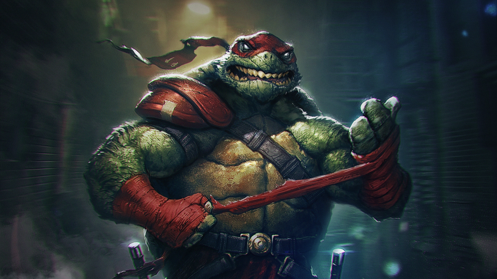

raphael
Raphael, nicknamed Raph, is a fictional superhero and one of the four main characters of the Teenage Mutant Ninja Turtles comics and all related media and second oldest/mid-middle-child of the turtle brothers. He is usually depicted wearing a red eye mask; in this regard he is the only turtle to retain the color in all media, whereas the others each received a different color. Raphael wields twin sai, the points of which are usually sharpened, as his primary weapon. Raphael is most famous for his temperamental personality, being short-tempered, aggressive, sullen, maddened, and rebellious.